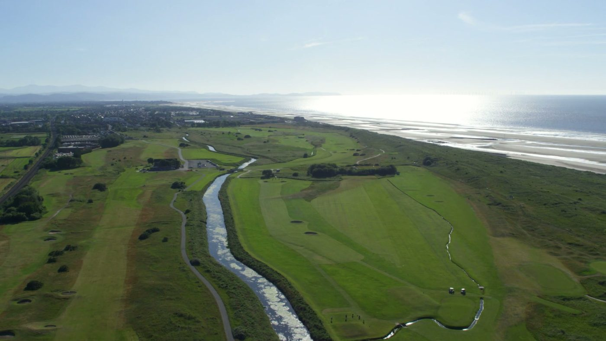
Tour of the Course
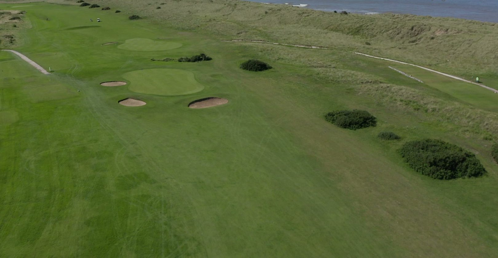
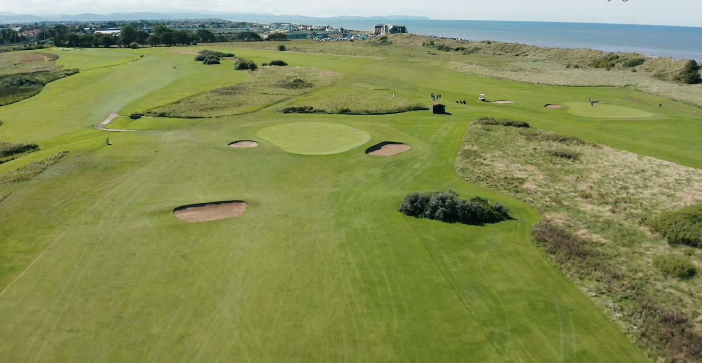
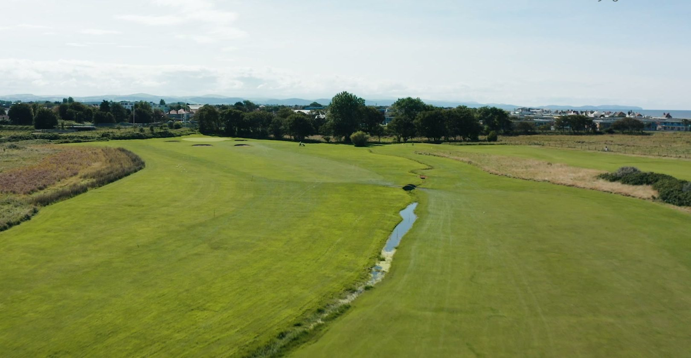
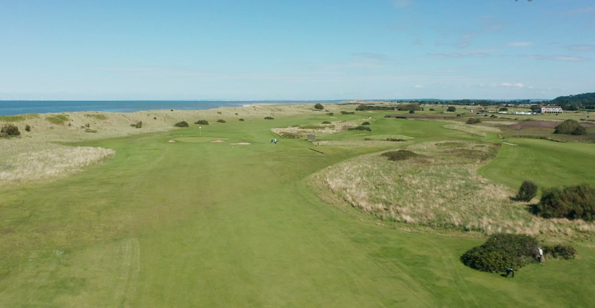
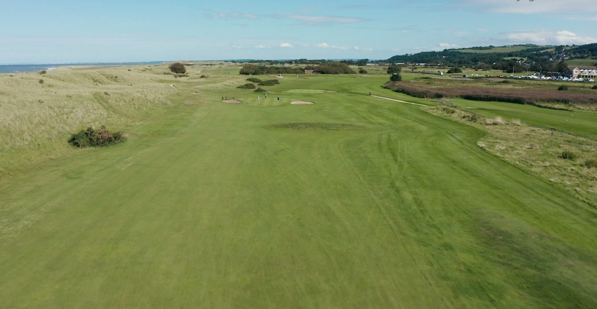
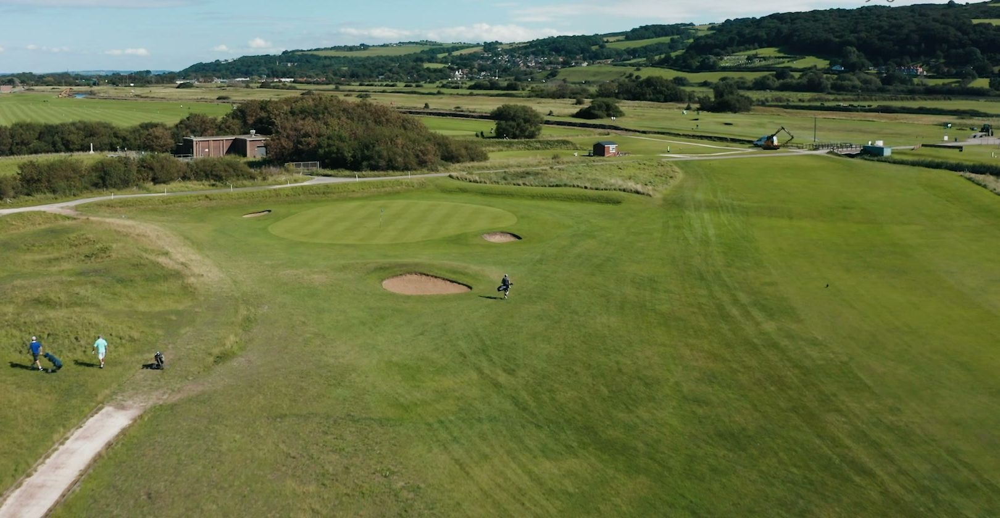
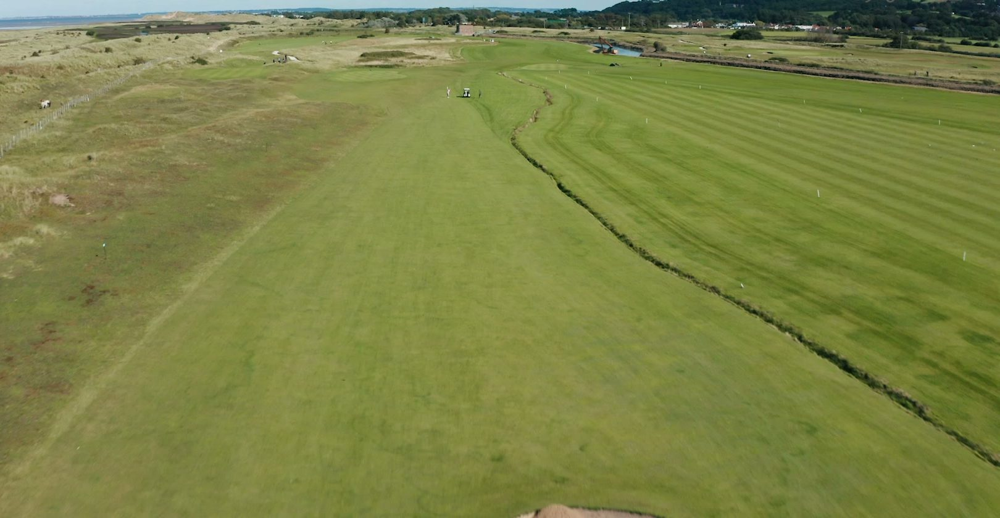
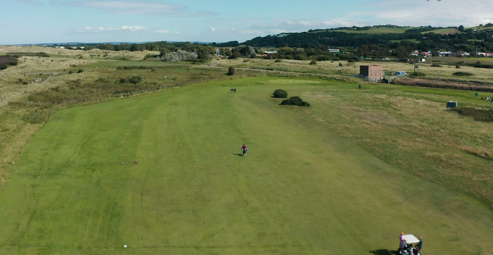
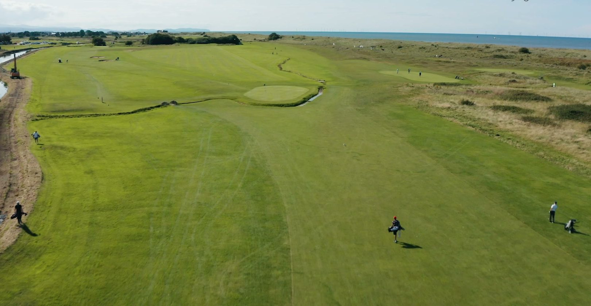
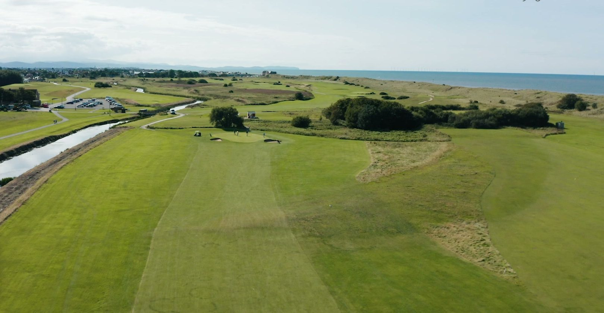
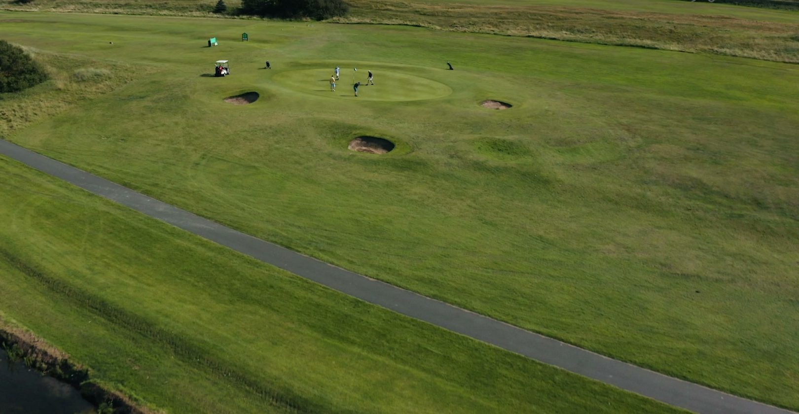
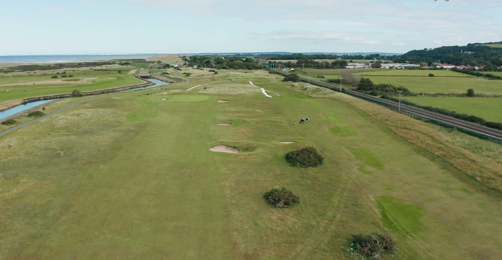
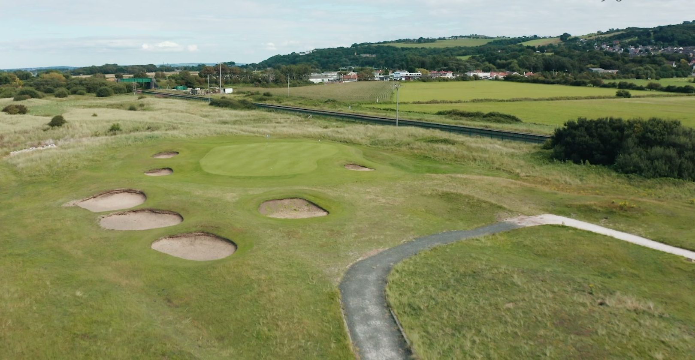
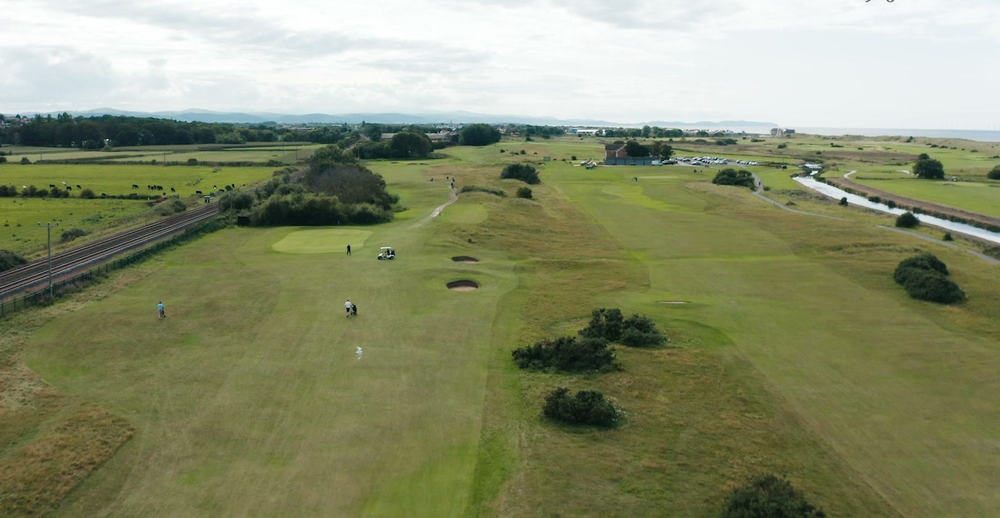
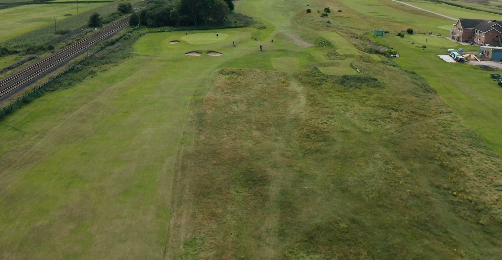
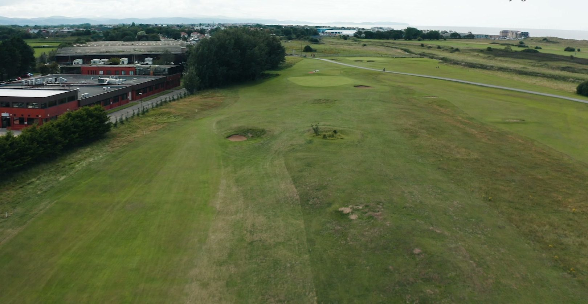
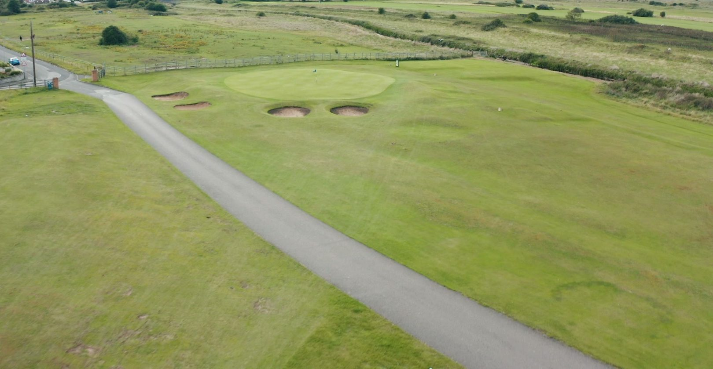
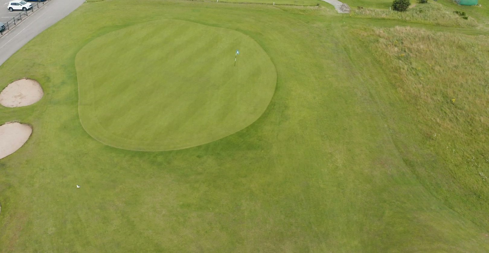
Notes in the club’s own words. Picture: a still from the club’s flyover of this hole.
Men's scorecard
| Tee | Par | Yards | Stroke index |
|---|
Ladies' scorecard
| Tee | Par | Yards | Stroke index |
|---|
Full scorecard
| Hole | Yards | Par | SI |
|---|
Course and slope ratings
| Tees | Yards | Par | Rating | Slope |
|---|---|---|---|---|
| Blue | 6,890 | 72 | 72.1 | 117 |
| White | 6,627 | 72 | 70.9 | 114 |
| Yellow | 6,269 | 72 | 69.2 | 112 |
| Red | 5,737 | 75 | 72.4 | 114 |
Ratings from 1 November 2024.
Local rules
- Out of bounds: the clubhouse and car park; over any fence or hedge; the practice ground and short-game area (white posts with black tops).
- The gutter: out of bounds in or over it on the 8th, 9th, 10th, 12th, 13th and 18th, and where it crosses the 1st and 11th.
- On the 18th, on or over the road on the left between the white posts and the east end of the car park, and the ditch marked by white posts. Out of bounds also at the back of the 6th, and on the 3rd and 16th over the white posts on the left.
- The road crossing the 17th and 18th fairways: a ball on or within a club-length of it may be dropped a club-length away, without penalty, keeping the road between ball and hole.
- Penalty areas are marked by red or yellow stakes. Telegraph poles and their wires are part of the course.
Course overview
A championship links between the beach and the town, the most northerly course in mainland Wales, with the gutter winding through it. The Welsh Amateur has been played here nine times.
The opening holes play into the prevailing wind, and the 10th, Cardinal, plays straight into it: stroke index 1, the hardest hole on the course. The 6th is the only par 3 on the front nine. The 12th is the first hole built on the old dunes, and the 15th, Copse, is the club’s signature hole, with low rambling dunes beside a flat fairway and the railway out of bounds on the left. The road crosses the 17th and 18th, and the drive at the last is aimed at the right edge of the clubhouse.
Par 72, 6,890 yards from the blue tees and 6,269 from the yellows. From the red tees, par 75 over 5,737 yards. There are practice facilities next to the clubhouse.
Course status today: open, all 18 holes. Updated by the office.